Produkt, Summe, Potenz
Mit einem KI-Tutor lernen
Ein KI-Tutor erklärt dir diese Seite und hilft dir bei den Übungen. Wähl deinen Assistenten:
Mit Claude öffnen Mit ChatGPT öffnen Mit Mistral Vibe öffnen
Du nutzt dein eigenes Konto beim Anbieter. Der Assistent ist kein Angebot von lernapps.net: lernapps liefert nur Inhalte und Übungen. Die Wahl gilt für alle Seiten, nur auf diesem Gerät.
Warum?
Wer jede Wahrscheinlichkeit bis zum gekürzten Bruch ausrechnet, verliert Zeit und macht Rechenfehler. Oft reicht der Term: . Frag deine Lehrerin oder deinen Lehrer, ob du in der Klassenarbeit ausrechnen musst. Wichtig ist, dass der Term stimmt – und genau das übst du hier: Du erkennst, welcher Term zu einem Ereignis passt und welcher einen typischen Fehler enthält.
Regel
Ein Term für hat immer denselben Aufbau:
- Jeder passende Pfad wird ein Produkt seiner Zweige (1. Pfadregel).
- Die Produkte aller passenden Pfade werden addiert (2. Pfadregel).
- Kommt derselbe Faktor mehrmals vor, darfst du eine Potenz schreiben.
Typische falsche Terme
Nur ein Pfad statt aller, entlang des Pfades addiert statt multipliziert, die Pfade des Gegenereignisses oder mit statt ohne Zurücklegen gerechnet.
Beispiel
Genau einmal rot, ohne Zurücklegen
Urne mit 3 roten und 2 blauen Kugeln, zweimal ziehen ohne Zurücklegen. Ereignis: genau einmal rot.
| Richtig | |
|---|---|
| Nur ein Pfad | – blau-rot fehlt |
| Mit Zurücklegen | – der Nenner muss kleiner werden |
Bild

Der Baum aus dem Beispiel: 3 rote (R) und 2 blaue (B) Kugeln, zweimal ohne Zurücklegen. Erste Stufe: rot 3/5, blau 2/5. Nach rot: rot 2/4, blau 2/4; nach blau: rot 3/4, blau 1/4. Orange sind die zwei Pfade von „genau einmal rot“: rot-blau 3/10 und blau-rot 3/10. Zusammen 3/5.
Quelle: Eigene Darstellung der Mathe-Karte. Lizenz: MIT.Video dazu
Beim Abspielen gehen Daten an YouTube/Google, darunter deine IP-Adresse.
Übung
Aufgabe Nr. 1
Aufgabe Nr. 1
Du wirfst eine Münze zweimal. Ereignis E: „genau einmal Kopf“. Welcher Term berechnet P(E)?
Das Bild zeigt den Baum der Aufgabe mit allen Zweigen.
- A) 1/2 · 1/2
- B) 1/2 + 1/2 + 1/2 + 1/2
- C) 1/2 · 1/2 + 1/2 · 1/2
Lösung
Richtig ist C).
Passende Pfade: Kopf-Zahl, Zahl-Kopf
P(E) = 1/2 · 1/2 + 1/2 · 1/2 = 1/2
Übung
Lösung
fünf Sechstel hoch drei richtige Antwort
Derselbe Faktor dreimal multipliziert ist die dritte Potenz. Ausgerechnet sind das 125 Zweihundertsechzehntel.
drei mal fünf Sechstel
Das ist fünf Sechstel plus fünf Sechstel plus fünf Sechstel, also eine Summe. Sie ist größer als 1 und keine Wahrscheinlichkeit.
fünf hoch drei durch sechs
Hier ist nur der Zähler hoch drei genommen. Bei der Potenz eines Bruchs kommt auch der Nenner hoch drei.
fünfzehn Achtzehntel
Das sind nur fünf Sechstel, erweitert mit 3. Beim Multiplizieren werden die Zähler und die Nenner miteinander multipliziert.
Kommt derselbe Faktor mehrmals vor, darfst du eine Potenz schreiben: fünf Sechstel mal fünf Sechstel mal fünf Sechstel ist fünf Sechstel hoch drei, ausgerechnet 125 Zweihundertsechzehntel.
Mehr dazu: